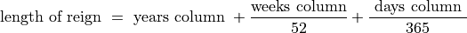

Estimation I: One Variable Statistics#
We must be careful not to confuse data with the abstractions we use to analyze them.
William James, 1907
In this lab, you will use Python to calculate sample statistics and graphical representations for a dataset that represents the length of each Roman Emperor’s reign. You will use these statistics and graphs to draw conclusions about the distribution of Roman Emperor reigns.
Instructions#
Download the
.csvdataset below and place it in theLinux Filesfolder where you saved your .py scripts.In the same folder, create a Python
.pyscript namedGROUPNAME_project_three.pyin yourLinux Filesfolder on your file system. You can do this by opening an IDLE session, creating a new file and then saving it. ReplaceGROUPNAMEwith your last and first name, respectively.Create a docstring at the very top of the script file. Keep all written answers in this area of the script.
Read the Background section.
Read the Loading In Data section.
Load in the data from the
.csvfile using the technique outlined in the Loading In Data section.Perform all exercises and answer all questions in the Project section. Label your script with comments as indicated in the instructions of each problem.
When you are done, zip your script and the csv file in a zip file named
GROUPNAME_project_three.zipHave one member of the group pload the zip file to the Google Classroom Project Three Assignment.
Background#
TODO
Loading In Data#
The following code snippet will load in a CSV spreadsheet named example.csv, parse it into a list and then print it to screen, assuming that CSV file is saved in the same folder as your script. Modify this code snippet to fit the datasets in this lab and then use it to load in the provided datasets in Datasets section.
import csv
# read in data
with open('example.csv') as csv_file:
csv_reader = csv.reader(csv_file)
raw_data = [ row for row in csv_reader ]
# separate headers from data
headers = raw_data[0]
columns = raw_data[1:]
# grab first column from csv file and ensure it's a number (not a string)
column_1 = [ float(row[0]) for row in columns ]
print(column_1)
Project#
Write a function that accepts a list of data an argument and computes the following sample statistics. Write a separate function for each exercise and label it with a comment. Name the function appropriately.
The sample mean of a dataset.
The sample median of a dataset.
Any percentile of a dataset.
The sample variance of a dataset.
The sample standard deviation of a dataset.
Tip
#1c will require two arguments, the list of data and the percentile you wish to find.
Note
We will do this part in class together.
Load in the data from the Dataset section. Note the length of a reign is separated in a
Yearscolumn, aMonthscolumn and aDays. To clean the data and compute the total length of a Roman Emperor’s reign, apply the formula to each row of data,

Save the cleaned data in a new list. Label the list with a comment.
Using the functions created in #1, find the following statistics using the Dataset. Label each computation with a comment.
The mean length of a Roman Emperor’s reign.
The median length of a Roman Emperor’s reign.
The 25 th percentile length of a Roman Emperor’s reign.
The 75 th percentile length of a Roman Emperor’s reign.
The sample standard deviation of a Roman Emperor’s reign length.
Compare the answers to #2a and #2b. What do these two answers tell you about the skew of this distribution? Interpret the skew in terms of Roman Emperors and the length of their reign, i.e. what does the skew tell you about Roman Emperor’s and the length of their reigns?
Construct a relative frequency histogram and a cumulative relative frequency using 10 classes for this sample of data. Label the code for creating the plots with a comment. What type of distribution shape does this dataset have? Does this agree with your answer to #4? Explain.
Construct a boxplot for this sample of data. Label the code for creating the plot with a comment. Based on the boxplot, are there any potential outliers in this dataset? Are the outliers Emperors who had long rules or short rules?
Find the coefficient of variation for this dataset. What does this statistic tell you about the distribution? Interpret the coefficient of variation in terms of Roman Emperors and the length of their reign.
Summarize the conclusions you can draw about Roman Emperors and the length of their reign. Answer the following questions in your summary.
What percentage of Roman Emperors had reigns longer than 30 years?
What percentage of Roman Emperors had reigns shorter than 1 year?
Interpret the results of #a and #b. What does this tell you about the distribution of Roman Emperors?
Dataset#
You can download the full dataset here.
The following table is the a preview of the data you will be using for this project.
Emperor |
Years |
Months |
Days |
TheodosiusII |
42 |
2 |
27 |
Augustus |
41 |
7 |
3 |
ConstantineI |
30 |
10 |
27 |
ValentinianIII |
29 |
7 |
22 |
Honorius |
30 |
7 |
8 |
The meaning of the columns is as follows:
- Emperor is the name of the Roman Emperor.
- Years is the number of years in the reign.
- Months is the number of months in the reign.
- Days is the number of days in the reign.